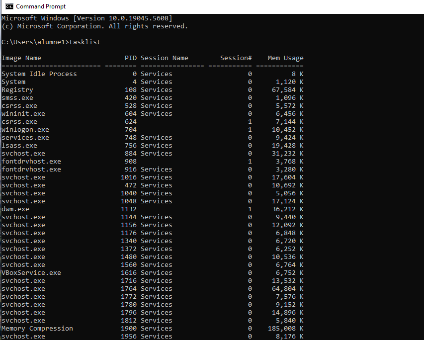
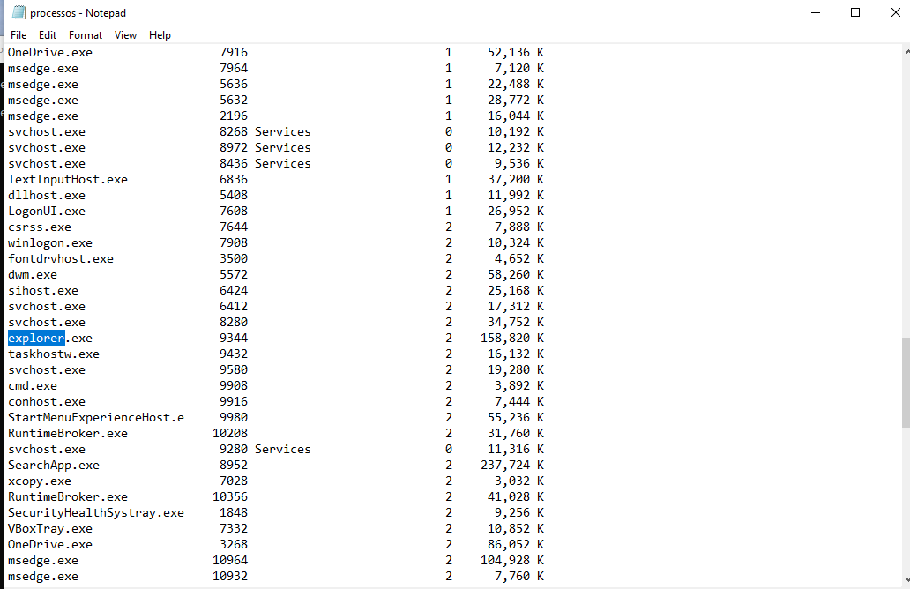
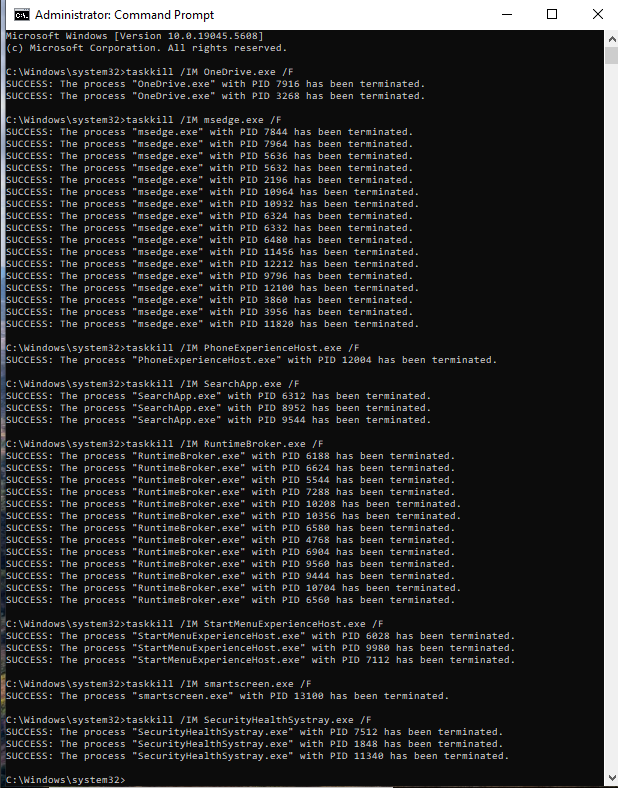
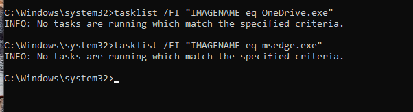
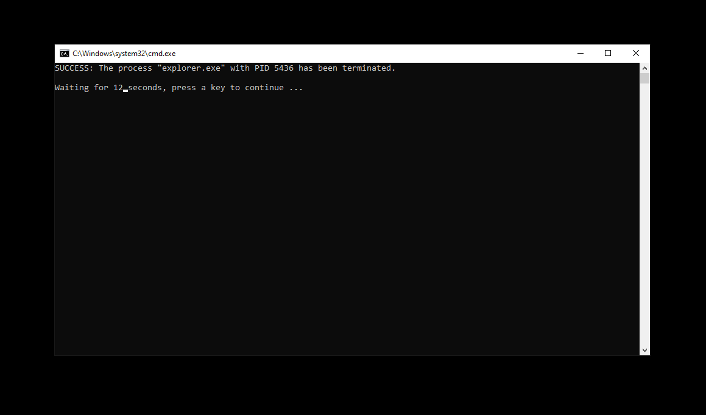
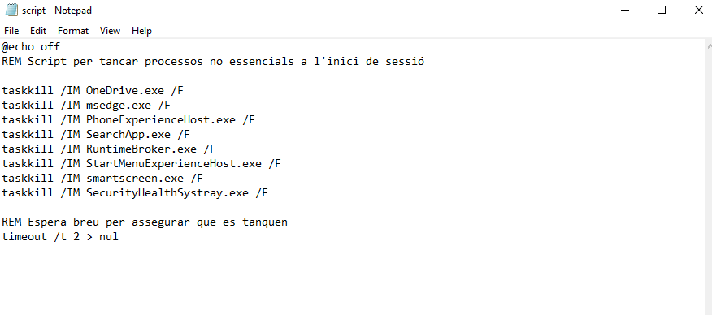
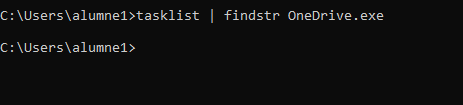

Gestió de processos i serveis de Windows
Llista de processos actius
A Windows, tots coneixem el Gestor de tasques (Task Manager), des d’on es poden veure els processos en execució i el consum de recursos.
Però... sabies que també pots veure els processos des de la línia d’ordres (CMD)? Sí, per CMD!
Obrim el CMD i escrivim:
tasklist
Això ens mostra una llista de tots els processos actius.

NOTA: També podem executar aquesta comanda per guardar la llista en un fitxer de text:
tasklist > C:\Users\%USERNAME%\processos_inici.txt
Això crea un fitxer .txt dins del perfil de l’usuari actual. El podem obrir per veure què s’està executant.

Processos no essencials o prescindibles per a l’usuari
| Nom del procés | Memòria usada | Justificació per eliminar-lo |
|---|---|---|
| OneDrive.exe | 92.380 K | No cal sincronització al núvol per usuaris locals en pràctiques. Estalvia recursos. |
| msedge.exe (múltiples) | ~500.000 K | Consum elevat de RAM. Si no s’utilitza per treball directe, es pot tancar. |
| PhoneExperienceHost.exe | 125.964 K | Connecta mòbils a Windows. Innecessari en entorns educatius o d'empresa. |
| SearchApp.exe | 221.460 K | El cercador pot ocupar molta RAM. Pot desactivar-se per optimització. |
| RuntimeBroker.exe (x4) | ~120.000 K | Servei vinculat a apps modernes (UWP). No és imprescindible si no s’utilitzen. |
| StartMenuExperienceHost.exe | 55.188 K | Anima el menú Inici. Innecessari si es busca màxim rendiment. |
| smartscreen.exe | 23.388 K | Filtre SmartScreen. Pot desactivar-se si no es fan instal·lacions freqüents. |
| SecurityHealthSystray.exe | 9.480 K | Mostra només la icona de seguretat. No afecta el motor de Windows Defender. |
Eliminar processos manualment
Dins del CMD es poden tancar processos no essencials amb la comanda taskkill.
Comandes per eliminar processos:
taskkill /IM OneDrive.exe /F
taskkill /IM msedge.exe /F
taskkill /IM PhoneExperienceHost.exe /F
taskkill /IM SearchApp.exe /F
taskkill /IM RuntimeBroker.exe /F
taskkill /IM StartMenuExperienceHost.exe /F
taskkill /IM smartscreen.exe /F
taskkill /IM SecurityHealthSystray.exe /F
Nota: Alguns processos (com
msedge.exeoRuntimeBroker.exe) poden tenir múltiples instàncies. Pot caldre executar la comanda diverses vegades o identificar el PID i tancar-lo específicament.

Comprovar si han estat eliminats
Executa de nou:
tasklist
o bé:
tasklist | findstr nom_del_process
Per exemple:
tasklist | findstr OneDrive.exe

Si el procés ja no apareix, vol dir que s’ha tancat correctament.
Què passa si mates un procés crític com explorer.exe?
El procés explorer.exe és el que gestiona l’escriptori de Windows, la barra de tasques i l’explorador d’arxius. És un procés essencial per a la interfície gràfica de l’usuari.
Si tanquem explorer.exe amb la comanda:
taskkill /IM explorer.exe /F
Resultat immediat:
- Desapareix l’escriptori, la barra de tasques i qualsevol finestra de l’Explorador de fitxers.
- Sembla que el sistema “ha penjat”, però realment tot segueix funcionant en segon pla.

Recuperació (prova controlada):
Pots obrir el Gestor de tasques (Ctrl + Shift + Esc) > Fitxer > Executa una nova tasca > escriu explorer.exe i fes clic a D'acord.
Això reiniciarà el procés i recuperaràs la interfície gràfica sense necessitat de reiniciar l’ordinador.
Millora del rendiment de màquines amb pocs recursos
La gestió de processos pot suposar una millora significativa del rendiment en equips amb pocs recursos (per exemple, màquines virtuals amb poca RAM o CPU limitada).
Beneficis concrets:
- Redueix l'ús de memòria RAM, tancant processos en segon pla innecessaris.
- Millora la resposta del sistema eliminant càrregues innecessàries al processador.
- Evita bloquejos o alentiments causats per serveis que no s'utilitzen (com OneDrive, serveis mòbils, animacions visuals, etc.).
- Permet optimitzar equips de pràctiques, tallers o laboratoris, on el rendiment és més important que la funcionalitat visual.
Aquesta tècnica és especialment recomanada per entorns educatius o empresarials on es reutilitzen equips antics o virtualitzats amb recursos limitats.
Automatització per a eliminar els processos
Per fer aquesta tasca de manera automàtica, podem crear un script .bat que s’executi cada cop que iniciem la sessió de Windows.
Aquest script s’encarregarà d’aturar automàticament els processos que considerem no essencials o innecessaris.
Ja sabem com configurar scripts d’inici de sessió mitjançant les polítiques de grup (gpedit), com hem vist anteriorment.
A continuació, es mostra un exemple senzill d’script:
@echo off
taskkill /IM OneDrive.exe /F
taskkill /IM msedge.exe /F
taskkill /IM PhoneExperienceHost.exe /F
taskkill /IM SearchApp.exe /F
taskkill /IM RuntimeBroker.exe /F
taskkill /IM StartMenuExperienceHost.exe /F
taskkill /IM smartscreen.exe /F
taskkill /IM SecurityHealthSystray.exe /F
Pots afegir o eliminar processos del script segons les teves necessitats.
Tingues en compte que eliminar processos essencials pot provocar inestabilitat.
Com aplicar aquest script a l'inici de sessió
- Desa l’script amb extensió
.bat(per exemple:neteja_processos.bat). - Obre l’eina gpedit.msc (
Editor de polítiques de grup local). - Ves a: Configuració de l'usuari → Configuració de Windows → Scripts (Inici de sessió)
- Fes doble clic a Inici de sessió i després a Afegir...
- Navega fins al
.batque has creat i selecciona’l. - Aplica els canvis i tanca.

Des del pròxim inici de sessió, l’script s’executarà automàticament i tancarà els processos especificats, millorant així el rendiment i reduint l’ús de memòria.
Al iniciar sessió amb l’usuari alumne1, podem comprovar que ja no hi ha processos com OneDrive.exe en execució, ja que l’script els ha eliminat correctament durant l’inici de sessió.

NOTA: És possible que l’script no s’executi correctament si alguns dels processos necessiten permisos d’administrador per ser aturats.
Solucions si l’script no funciona com esperat:
Executar l’script amb privilegis elevats (PowerShell)
Una solució és fer servir PowerShell per obrir el .bat amb permisos elevats.
Aquí tens un exemple de com fer-ho dins d’un script .ps1:
Start-Process "C:\ruta\al\teu_script.bat" -Verb RunAs
Aquest mètode obre el
.batcom a administrador, però pot demanar confirmació d’UAC si està activat.
Utilitzar el Task Scheduler per executar el script com a administrador
Una alternativa més senzilla i estable és crear una tasca programada que executi l’script amb permisos elevats:
- Obre Task Scheduler (
Planificador de tasques). - Crea una nova tasca (Create Task...).
- A la pestanya General, activa l’opció "Run with highest privileges".
- A la pestanya Triggers, afegeix un nou trigger que s’executi "At log on".
- A la pestanya Actions, selecciona Start a program i indica la ruta del
.bat. - Desa la tasca.
Aquesta opció assegura que l’script sempre s’executi amb permisos suficients, sense necessitat d’intervenció de l’usuari.